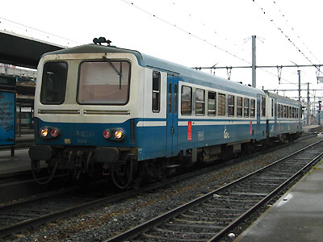
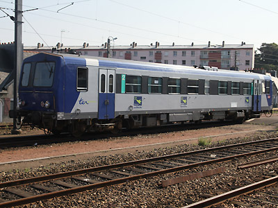
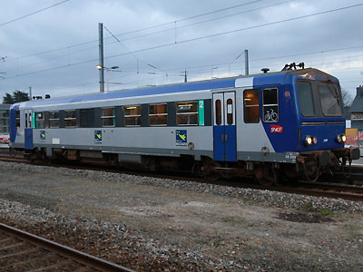
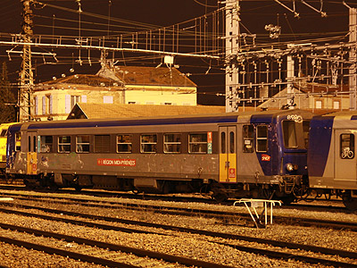

X 2100
Autorails monocaisses utilisés principalement en Bretagne, Limousin et Midi-Pyrénées.
Motorisation sous caisse par un 6 cylindres Diésel en ligne Saurer de 600ch. Ces autorails sont aptes à l'UM avec les X 2200, X 2800 et forment des rames avec les XR 6000, 6100 et 6200.
Quelques données techniques
Constructeur : ANF
Motorisation : L6 Saurer S1 DHR turbocompressé
Transmission : convertisseur hydraulique Voith.
Puissance totale : 412 kW
Vitesse limite : 140 km/h
Aptitude à l'UM
Longueur : 22,40 m
Masse : 43,7t
Pour plus d'info :
La fiche X 2100 sur Wikipedia
Fiche technique des X 2100 de Florent Brisou
L'inventaire des X 2100 sur Trains du Sud-Ouest

L'X2121 Midi-Pyrénées en UM avec un X2800 à Rodez (25/08/2002)

L'X2102 à Toulouse (01/06/2004)

L'X2111 à Guimgamp (12/07/2013)

L'X2139 à Guimgamp (06/02/2015)

L'X2101 à Toulouse (09/01/2015)